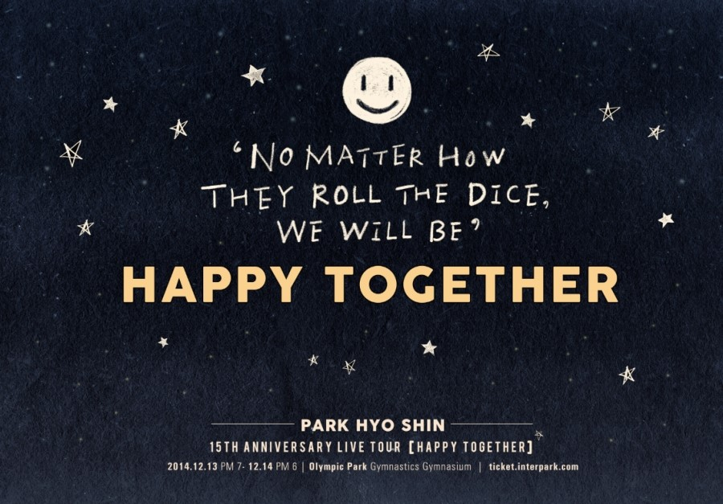

- WEB PUBLISHING
- XHTML & CSS2중급
- HTML5 & CSS3초급
- SEMANTIC MARKUP
- 웹접근성 & 웹표준중급
- 웹 기획초급
- FRONT-END DEVELOP
- jQuery & jQuery Mobile초급
- Javascript초급
- PROGRAMMING
- PHP & mySQL초급
- MOBILE PUBLISHING
- 모바일 웹 & 앱초급
- 반응형 웹초급
- SOFTWARE TOOL
- Adobe Photoshop & Adobe Dreamwever중급

 |
♥ |
 |
@ 공연명 : 박효신 15주년 기념 라이브 투어 〈HAPPY TOGETHER〉
@ 공연일시 : 2014년 12월 13일 (토) 7PM / 2014년 12월 14일 (일) 6PM
@ 공연장소 : 올림픽공원 체조경기장
@ 티켓가격 : VVIP석 143,000원 / VIP석 132,000원 / R석 121,000원 / S석 99,000원 / A석 77,000원 / B석 55,000원
@ 관람등급 : 만7세 이상 관람가 (미취학아동 입장불가)
@ 예매처 : 인터파크
http://ticket.interpark.com/Webzine/Paper/TPNoticeView.asp?bbsno=34&pageno=1&stext=&no=20488&groupno=20488&seq=0&KindOfGoods=TICKET&Genre=2&sort=WriteDate
@ 티켓 오픈일 : 2014년 10월 15일(수) 오후 8시